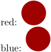

Syntax (autogenerated)
| \uniqueMPgraphic{...}{...=...,...} | |
| {...} | name |
| key | value |
Syntax
| \uniqueMPgraphic{...} | |
| {...} | name of an MPgraphic previously defined with \startuniqueMPgraphic |
Description
Place a new instance of a graphic defined with \startuniqueMPgraphic. The graphic will be recompiled; for static images, see \startreusableMPgraphic instead.
Example
-
\def\mycolor{.625red} \startuniqueMPgraphic{name} fill fullcircle scaled 20pt withcolor \mycolor; \stopuniqueMPgraphic red: \uniqueMPgraphic{name} \def\mycolor{.625blue} blue: \uniqueMPgraphic{name}
- 
See also
Help from ConTeXt-Mailinglist/Forum
All issues with: